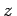
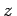

Inhalt Index DeskTop Bronstein

 Funktionentheorie Funktionen einer komplexen Veränderlichen Stetigkeit, Differenzierbarkeit
Funktionentheorie Funktionen einer komplexen Veränderlichen Stetigkeit, Differenzierbarkeit


Grenzwert einer Funktion f(z) heißt eine komplexe Zahl  , wenn für z gegen z0 die Funktion f(z) gegen w0 strebt:
, wenn für z gegen z0 die Funktion f(z) gegen w0 strebt:
 |
(14.1a) |
Dazu ist erforderlich, daß sich eine beliebig kleine positive Zahl  angeben läßt, für die es eine reelle positive Zahl
angeben läßt, für die es eine reelle positive Zahl  derart gibt, daß für jede beliebige komplexe Zahl , ausgenommen höchstens die Zahl z0 selbst, die Ungleichungen
derart gibt, daß für jede beliebige komplexe Zahl , ausgenommen höchstens die Zahl z0 selbst, die Ungleichungen
| (14.1b) |
| (14.1c) |
erfüllt sind. Die geometrische Bedeutung geht aus der folgenden Abbildung hervor:
Einem beliebigen Punkt , ausgenommen höchstens den Punkt z0 selbst, der innerhalb eines Kreises mit dem Mittelpunkt z0 und dem Radius  liegt, entspricht in der w-Ebene, in die die Funktion w = f(z) abbildet, ein Punkt
liegt, entspricht in der w-Ebene, in die die Funktion w = f(z) abbildet, ein Punkt  , der in einem Kreis mit dem Mittelpunkt w0 und dem Radius
, der in einem Kreis mit dem Mittelpunkt w0 und dem Radius  liegt. Die Flächen mit den beliebig kleinen Radien nennt man auch die beliebig kleinen Umgebungen
liegt. Die Flächen mit den beliebig kleinen Radien nennt man auch die beliebig kleinen Umgebungen  und
und  .
.